AbilityFinder redesign — 15 reference sites (pick 2–4)
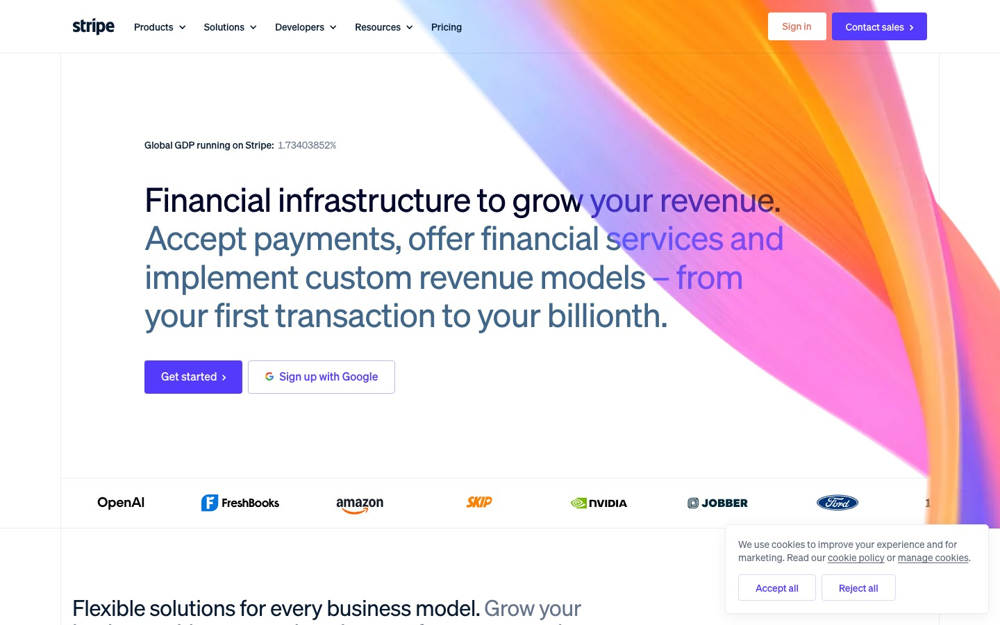
1. StripeFintech · type hierarchy · home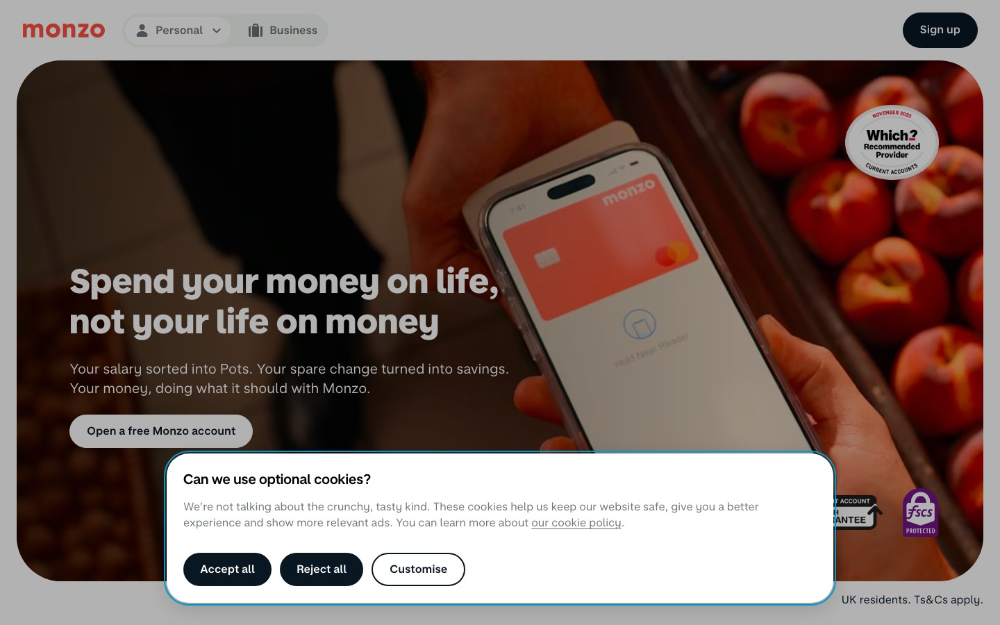
2. MonzoBanking · trust badges · home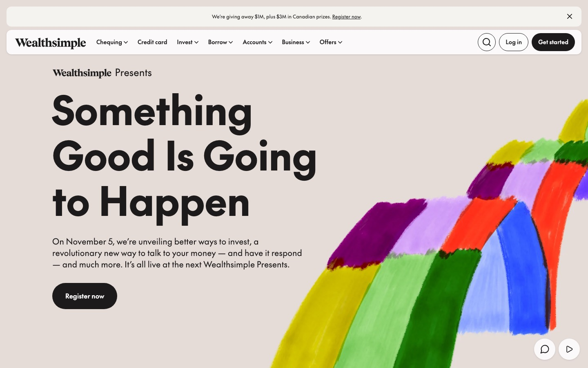
3. WealthsimpleCanadian fintech · short human copy · home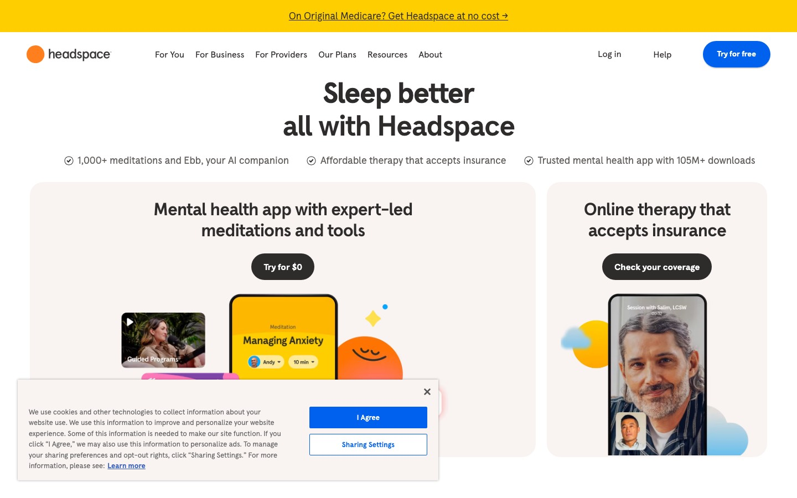
4. HeadspaceWellness · warm, calm · home/guides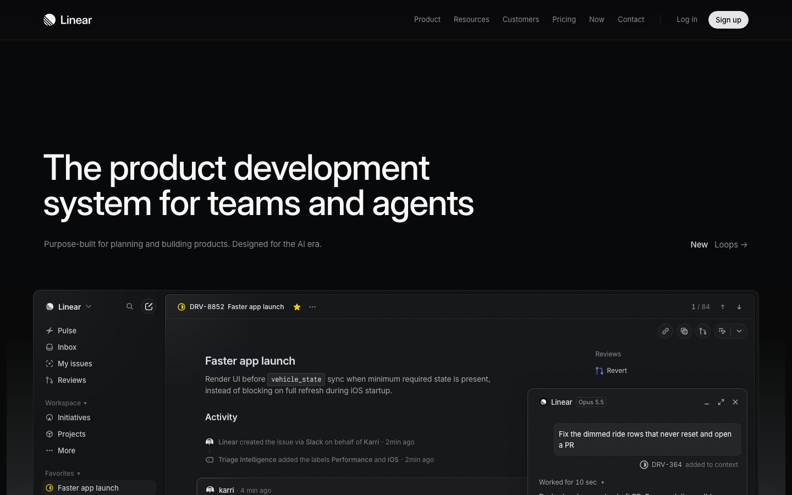
5. LinearSaaS · tidy list rows · results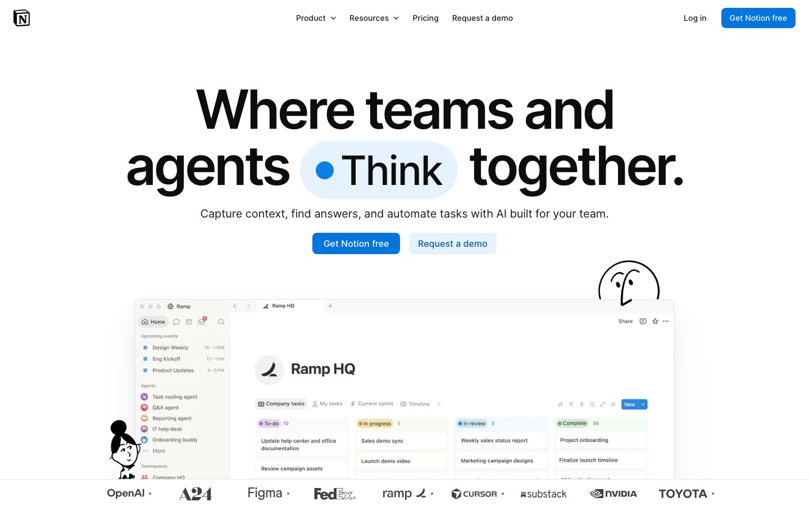
6. NotionSaaS · 3-step rhythm · how it works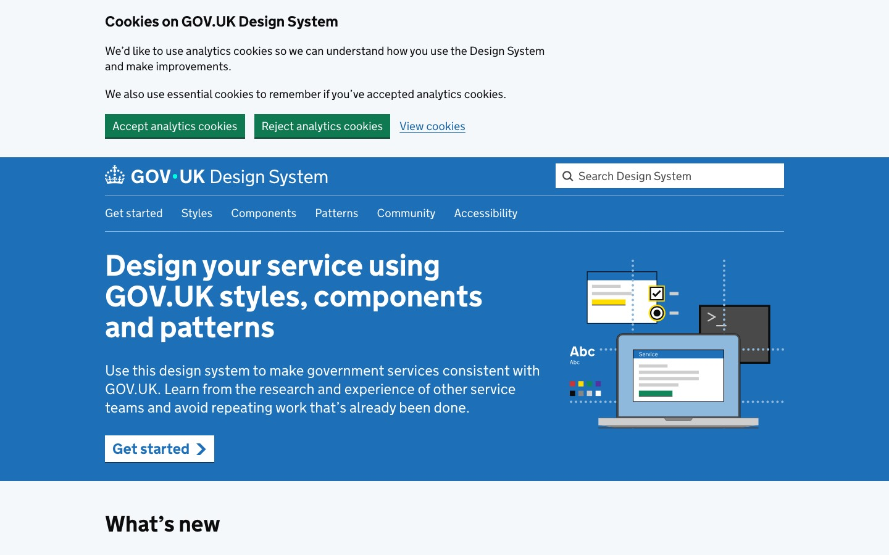
7. GOV.UKPublic sector · accessible questions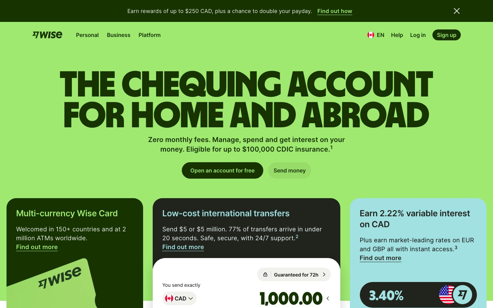
8. WiseFintech · inline calculator · questions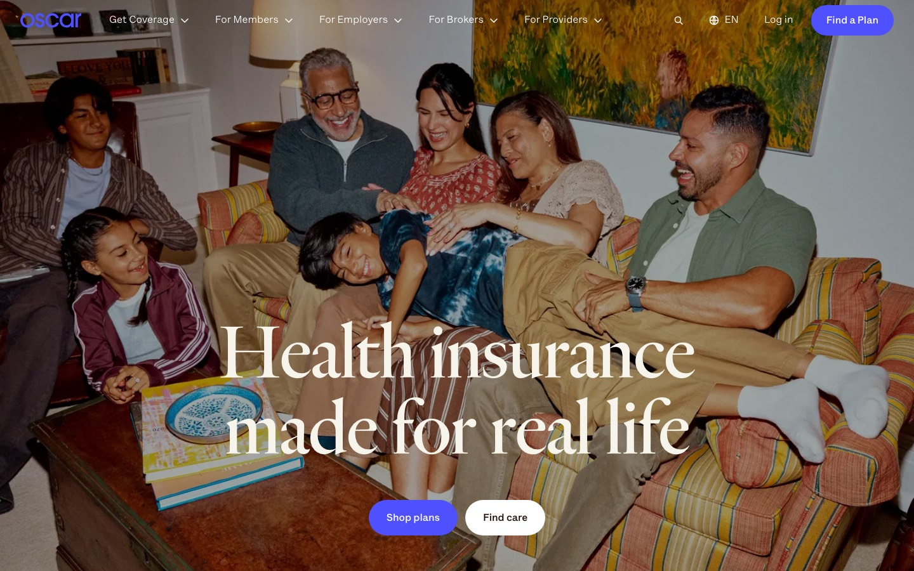
9. Oscar HealthHealth · plain-language trust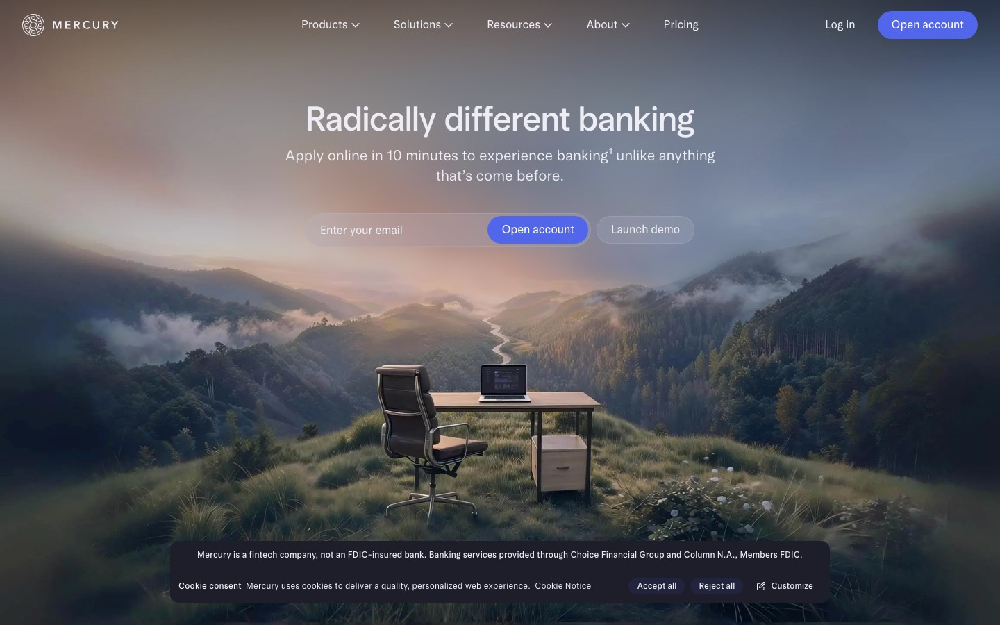
10. MercuryBanking · restrained palette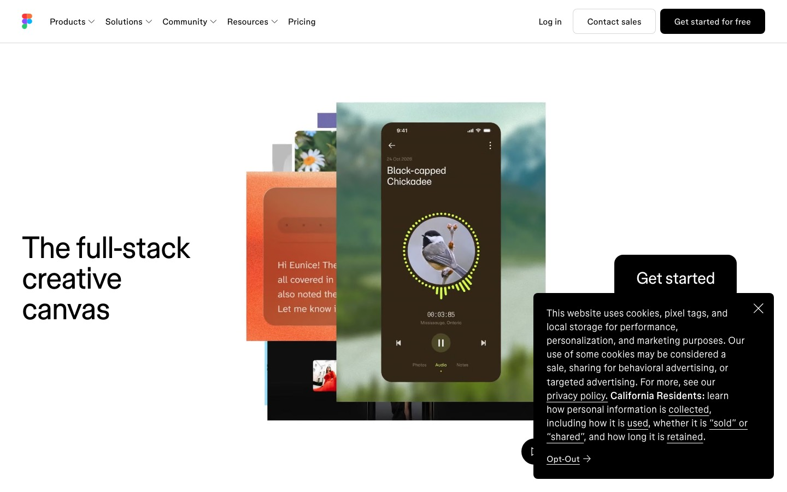
11. FigmaDesign · category tiles · guide index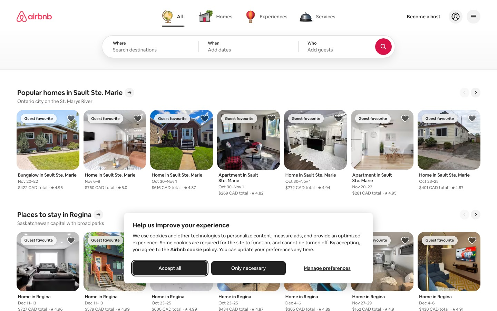
12. AirbnbMarketplace · comparison cards · results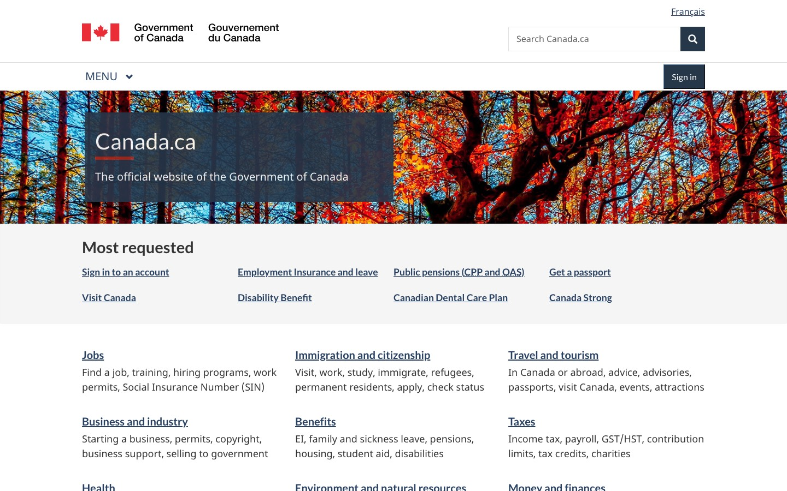
13. Canada.caPublic sector · familiar, bilingual · guides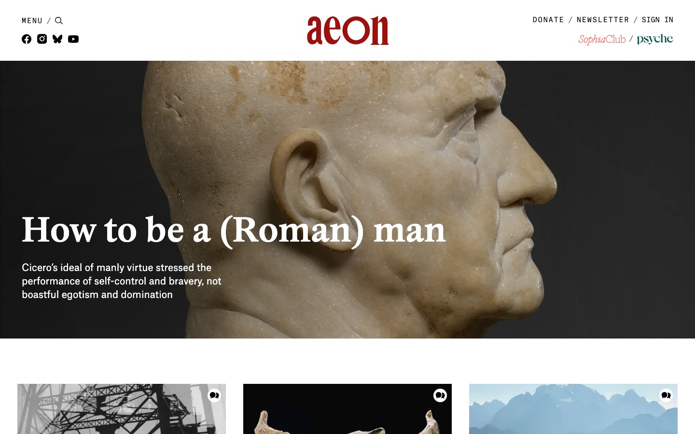
14. AeonEditorial · reading typography · guides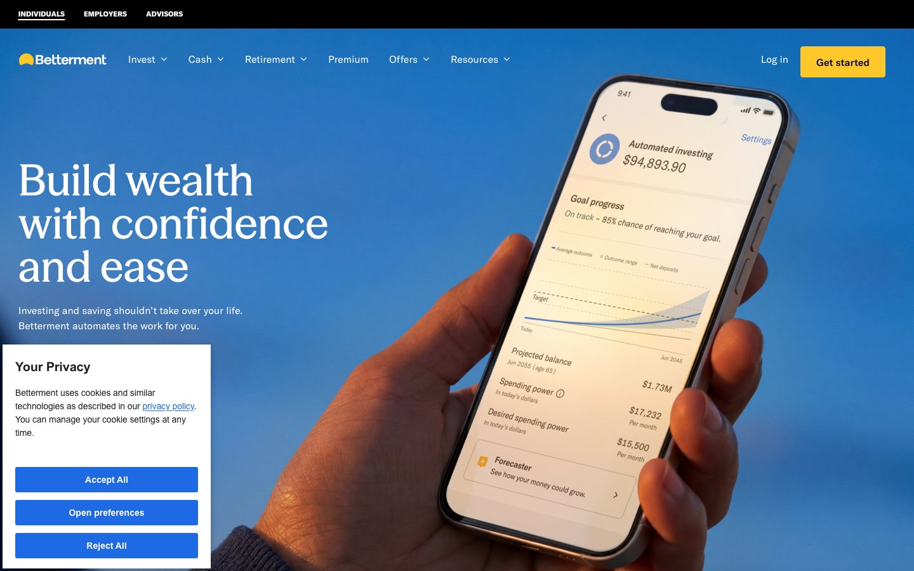
15. BettermentFintech · product cards, FAQ · results